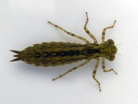

Стрекоза на травинке
Ветер раскачивает травинку, так что при ветре лучше фотографировать стрекозу на жёсткой веточке. В солнечную погоду стрекоза может позировать очень долго. Не ясно, спит она в это время, или наблюдает за вами. Я следил за одной стрекозой больше часа, фотгорафировал её с нескольких сантиметров. Она не была совсем неподвижной. Перебирала ножками, поворачивалась, кажется сохраняя ориентацию относительно солнца.
В 2014 году я сделал пруд на даче . Принёс туда ведро воды из речки. Кроме элодеи, мальков сомиков, дафний и жуков в принесённой воде оказались личинки стрекозы. Они довольно страшные на вид, копошатся в иле. Из них стали выводиться большие голубые стрекозы. Говорят, они охотятся на комаров и мух. Так что комфортная жизнь им обеспечена.


Личинка стрекозы